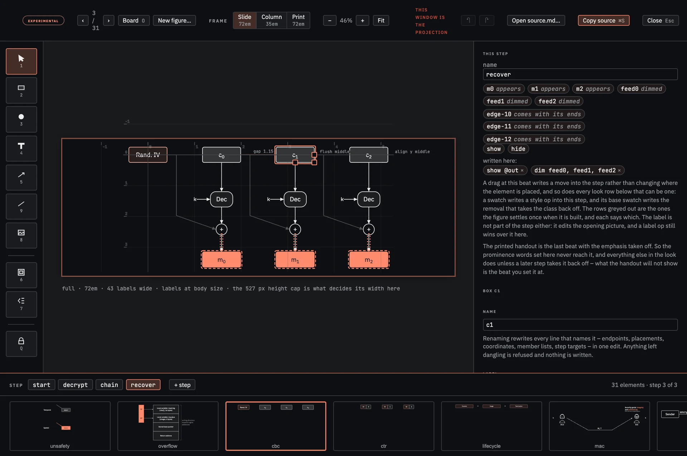

psi-slides · a figure language for lectures
Figures you write
Every lecture needs figures, and you already have a way to make them. PowerPoint, Keynote, Illustrator, Inkscape, TikZ, Mermaid, … – and for pictures that are drawn once and looked at once those are the right tools.
We believe lecture figures are different. They should be built up in front of a room while somebody talks over them, survive the slides being reordered, and come out of the same file as the printed handout. Ideally, changes can be tracked, invisible annotations can be added, edges move with their objects, and an LLM can read and change them.
In psi-slides, a figure is a few lines of text in the lecture’s own Markdown file, and the build – the one command that turns that file into slides – draws it.
Development status: The underlying ::: draw mechanism is available as a preview in this repository; it is not part of version 1.0.0 of psi-slides. The graphical editor is experimental and desktop-oriented: it has not yet been tested broadly.
Open it as a lecture
Animated Infographics is a complete psi-slides lecture. Its figures live inside its Markdown source, the build places them into the slides, and the same source becomes the projection, the speaker cockpit and both reading views.
| Open | What it shows | |
|---|---|---|
| The source | source.md | The Markdown, prose and every ::: draw block |
| The projection | audience | The view presented to the room |
| The cockpit | speaker | The private presenter view with notes and previews |
| The document | The lecture as a reading document | |
| … with private notes | print-notes | The same document with the speaker notes folded in |
Start with the projection. Space walks through the beats inside a figure; S opens a cockpit that follows it.
Figures in psi-slides
A figure is whatever a slide shows in place of plain text – such as an image or a video clip. Our focus is on special kinds of figures: interactive drawings that are fenced off with ::: draw. These are described with text and rendered when you build the slides.
This is a whole figure just as you would insert it into a slide. Note that the positions of the objects and arrows are not stored as absolute coordinates: Eve is placed against Alice, Bob against Eve. The arrows are described by naming their two ends and they find their own way between them.
::: drawbox alice "Alice"box eve "Eve" right of alice gap 1.7 {.accent}box bob "Bob" right of eve gap 1.7edge alice -> eve "plaintext"edge eve -> bob "plaintext":::
Beats let figures come alive
The same three boxes, with two beats added. Each beat is a step in an animation, similar to how keyframes work in video editing. Step through it: the second beat renames Eve, and her box, both arrows and the outline around her move without a line of source mentioning any of them.
::: draw {unit=170x56}box alice "Alice"box bob "Bob" right of alice gap 10.3box eve "Eve" between alice,bob offset 0,1.5 {.accent}edge direct alice -> bob "message"edge alice -> eve {.accent}edge eve -> bob {.accent}container zone "Eve's reach" over eve pad 0.45 {.dashed .muted}step intercept show eve hide directstep relabel label eve "Eve, on path" emph eve:::
Toy examples are nice, but what about real figures?
A passkey registration: four lifelines, nine messages, two notes, four beats. The numbering, the spacing and the lifelines are generated automatically.
::: draw {unit=150x40}# The actors are lines of their own because each needs a name later lines can# hold on to and an attribute tail of its own. Everything under them is a# message - an arrow between two names - or a note.sequence wa at 0,0 actor u "User" actor br "Browser" actor au "Authenticator" {.tone-3} actor rp "Relying Party" u -> br "clicks Create passkey" br -> rp "request registration options" br <- rp "registration options" "challenge · rp.id · user.id · algs" {.dashed} br -> au "CTAP authenticatorMakeCredential" "clientDataHash · rp.id · user · algs" note br,au "CTAP runs over USB, NFC or BLE" au -> u "prompt: PIN or biometric" u -> au "user verified locally" note au "generate key pair\nbind to SHA-256(rp.id)\nstore privately · emit publicly" au -> br "attestation object" "authData (public key, cred ID) · signature" {.dashed} br -> rp "attestationObject + clientDataJSON" "clientDataJSON carries challenge · origin" rp -> rp "verify signature · check origin"# Two annotations the statement knows nothing about, hung off generated# names: a brace over three messages and a note beside one of them. A beat# can show or emphasise either one exactly as it would a box.brace ctap over wa-3,wa-4,wa-5 pad 0.3 "on the device, over CTAP" side left {.small .turn}text fresh "the challenge is what makes it fresh" right of wa-2 gap 1.9 {.small .hand} -- wa-2step in-the-browser emph @br-msgsstep on-the-device dim @br-msgs emph @au-msgs emph austep back-to-the-relying-party dim @au-msgs dim au emph @wa-msg-7, @wa-msg-8step the-whole-registration dim @wa-msgs:::
Four design principles
The text is the figure
There is no second copy of it anywhere: no drawing file beside the lecture, no exported image sitting one edit behind its source. The figure is in the same file as the prose around it, so it travels when a slide is moved or copied, and a change to it arrives in a diff as the lines that changed, where a reviewer can read it without opening anything.
Graphical editing works. The live slides you present come with a graphical editor! When you drag a box in the editor, the relationships between objects and edges persist: right of alice gap 1.1 becomes right of alice gap 1.6. Try it: Open the slides, bring up a ::: draw figure, click on it, and press E to open the editor.
Positions are relations, and stay relations
right of alice gap 1.7 is not shorthand that the build resolves once and forgets. It is the whole of what the file says about where Eve is, permanently. Every element but the first is placed against something else in the figure, so the file is a set of dependencies rather than a set of coordinates, and the build follows them in whichever order resolves them.
There is no constraint solver – no engine that takes a list of requirements and searches for an arrangement meeting them all. Handed a figure it cannot satisfy, such an engine draws something that looks plausible and reports a number saying how far off it was. A dependency graph can fail in only one way – by referring back to itself – and the build names the line it failed on: placement cycle: b → w1 → b.
The cast is written once; the beats say what changes
Every element a figure will ever hold – every box, arrow, label, and outline – is written at the top of the ::: draw block, whether or not it is initially visible when the figure comes up on the projector. Underneath the list of elements, there are one or more step blocks. Each step block names a beat and lists what that beat does. Pressing the space bar when a figure is shown proceeds to the next beat. The following properties can change in a beat: visibility (show, hide), position (move), labelling (label), prominence (emph, dim, ghost) and styling (style).
An element is hidden at the opening beat exactly when the first thing any step says about it is show. The benefit: there is only one description of the figure with all its elements and a list of changes to it.
A beat is the whole figure laid out again
Every beat is the same layout evaluated again with different inputs, rather than a movement played over a finished picture, and the build works all of them out before the page is written. What the browser is handed is one drawing and a table of numbers to slide between, with no layout engine to load.
This is why an arrow stays attached to a box that walks away. The arrow never held a coordinate; it held “the right-hand edge of eve”, and that still means the right-hand edge of eve wherever eve now is.
Dragging a box rewrites the line that placed it
Since figure elements use relative positions, they can be edited by hand without the relations being lost. A drag means: change the number inside the relation and leave the relation standing. As a result, the editor works differently than what you are used to: it shows you the relations and asks you to name your elements.

The selected box is c1, and the words drawn beside it – gap 1.15, flush middle, align y middle – are the relations it was written with. That is the part a finished drawing cannot show anyone: a box placed gap 1.15 from its neighbour looks exactly like a box that happens to sit 1.15 away, and only one of the two moves when the neighbour does. Drag it and the number inside the relation is what changes.
The panel on the right describes the beat that is standing, and it describes it by what it does rather than by what it says: the beat is written show @out and dim feed0, feed1, feed2, and the panel names the three boxes that appear, the three arrows that come with their ends because an arrow is only as visible as the two things it joins, and the three lines dimmed under them. A drag at that beat writes a move into the step rather than moving the element, which is the distinction the source makes and the canvas has to keep.
Opening it, and where the edit goes
Click a figure in the live view and press E, or use the button in the corner of the card the click opens. It is on by default wherever a lecture has a diagram; editor: speaker in the frontmatter keeps it off the projection and editor: none ships the lecture without it.
Build with --watch and the edit goes straight back into source.md: the button in the top right then reads Write to source.md, the server splices the block into the file, and the rebuild that follows reloads every open tab. Without a watch server the same button copies the whole block to the clipboard to paste over the old one. An edit that stops the block compiling is not written anywhere – it is rolled back on the spot and the compiler’s error message is shown.
The gestures, the panel and the rest of it are in the manual. The editor is experimental and made for a desktop-sized authoring screen: it has automated coverage, but has not been tested broadly by people.
What you give up, and what you get
| A drawing programPowerPoint, Keynote, Excalidraw | An auto-layout languageMermaid, Graphviz, PlantUML | This::: draw | |
|---|---|---|---|
| Where the figure lives | A file of its own, beside the lecture | Text, in the lecture or beside it | Text, in the lecture file, between the sentences it belongs to |
| Who decides where things go | You, in pixels | The layout engine | You, in relations between one element and another |
| Give one box a longer label | The box grows; every arrow, outline and note around it is moved by hand | The graph is laid out again, and can come back in a different arrangement | Whatever was attached to it follows, and nothing else moves |
| Building it up in front of a room | A timeline of appearances and moves, played over the finished picture | There is no equivalent; a diagram is one static picture | Beats, each of them the whole figure laid out again |
| The handout | A second export, and a second thing to keep current | The same picture | The last beat of the same figure, carrying the prominence written into it rather than the prominence a beat lent it |
| Output and export | Standalone image, SVG or PDF, depending on the program | Usually SVG, PDF or PNG | Inline SVG in the lecture HTML. There is no standalone SVG or figure-level PDF export yet; the complete lecture or handout can be printed to PDF |
| When to reach for it | One figure, drawn once and not revised. Nothing to install, no build step, and everyone already has it | Forty nodes whose arrangement carries no meaning. It places everything for you, which this will never do | When the arrangement is part of the argument, or the figure has to be built up in front of a room |
This page argues for the language. Figures You Write is the manual: it builds a figure a line at a time, gives it beats, then lists every class and statement, fifteen design rules and a set of worked examples.